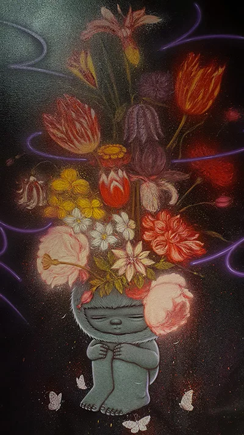
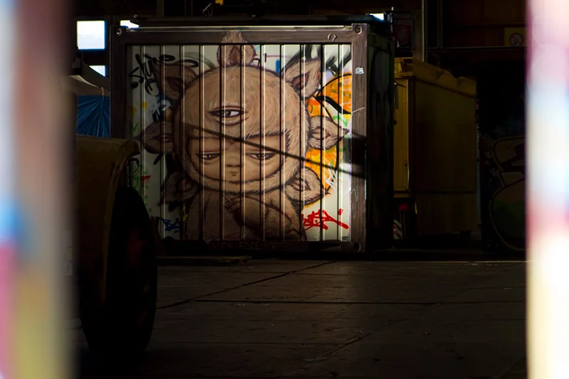
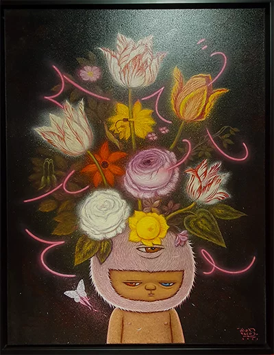
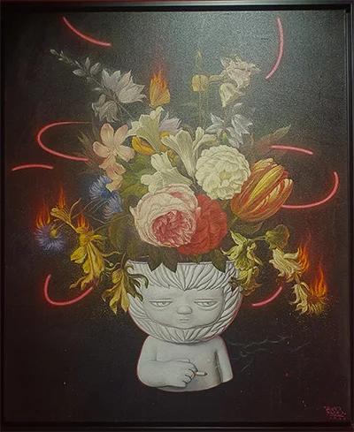

Talking about Ephemerality with Alex Face
Last weekend, I had the opportunity to meet with the talented Thai street artist Alex Face at
the debut of his solo show “Neon
and Fire Vanitas” at
Rome’s renowned Dorothy Circus Gallery. I seized
the chance to delve into his insights regarding Bangkok’s graffiti scene, and
engaged in a
thought-provoking conversation on the transient nature of life, a central
theme resonating through his
latest creations.

Alex Face solo show @ Dorothy Circus Gallery in Rome
Alex Face (Patcharapol Tangruen, born in 1981 in Chachoengsao, Thailand)
began painting in the streets
in 2002.
“Back in the day, I was into hip-hop culture. It all began when a friend brought a
skateboarding
magazine, and I saw graffiti in it, which I thought was cool. We looked it up on the internet, browsing
websites where we could explore various styles from around the world. It looked interesting, so I bought
some cans—I remember buying red and white—and from the very first time I painted with a spray can, I
thought: ‘Wow, this is fun.’ I experienced freedom. I have been painting my entire life; I studied at
the Fine Art Academy. However, it was only when I started painting outdoors that I felt I had discovered
my own style. I enjoyed venturing out and painting on abandoned walls, hanging out with my friends,
discovering new spots, and making new friends. I have kept this passion alive for 20 years because
painting that initial wall was so fun, and it made me embrace my freedom. Also, I appreciate that people
can see what I’m doing, my artworks. They may not know who I am, but they can see my creations. Leaving
a mark, something that people will see, makes me feel special. It grants me a voice.”
Alex Face
For Alex Face, graffiti became a means of liberation from the constraining regulations and
limitations he was taught during his studies at the Fine Arts Academy in Bangkok. Embracing the
burgeoning graffiti movement in Thailand in the early 2000s, he wholeheartedly embraced the freedom it
offered him as he painted on the streets.
“Back in 2002, only a few other people were doing graffiti in Thailand. Style-wise, though,
the scene was similar to the original one in America, meaning Thai writers were also painting letters
-classic graffiti. The pioneers of graffiti in Thailand had been exposed to it in America, some of them
were born there before returning to Thailand, introducing the culture. As for myself, I just did it in
my own way, since I wasn’t from America.”
Alex Face
After discovering graffiti, Alex Face found a new enthusiasm in doing art. Finally, he could
unleash his true self by projecting onto the walls his inner voice -and his face, literally. In his
early works, Alex Face hit the empty walls of Bangkok with spray-painted images of his own face.
“Back then, my unique way of doing graffiti consisted in coming and saying Hi to people from
every corner of the city. I don’t put my name everywhere, I put my face everywhere. That’s why my name
is Alex Face”.
Alex Face

Street art by Alex Face inside an abandoned warehouse in Amsterdam.
However, he also encountered numerous challenges as he engaged in unauthorized writing within
the public space.
“Some people liked it, but most of them didn’t understand what I was doing. Many times
graffiti got me in trouble. Legal troubles and lots of “get out of here.” However, that’s also what I
like about graffiti: everytime we go out, we don’t know what’s gonna happen. Sometimes we make new
friends, sometimes we make new enemies. I think many people in Thailand didn’t understand what I was
doing, even my friends or my teachers at the art school. In fact, some of my friends tried to persuade
me to stop, saying I was wasting time and money. What people didn’t understand is that I was having fun.
It is so much fun.”
Alex Face

Alex Face solo show @ Dorothy Circus Gallery in Rome
Mardi frequently features a third eye, symbolizing the spiritual dimension and adding an
additional layer of significance to Alex Face’s evocative and poignant murals that can be found
throughout the world.

The black and white creatures he painted for Amsterdam’s STRAAT museum in summer 2017
Alex Face is dedicated to utilizing his art as a means to raise awareness of social issues
and ignite a transformative impact. Numerous of his artworks tackle subjects encompassing
environmentalism, consumerism, and the repercussions of modernization on traditional cultures. His
artistic creations have been showcased in esteemed galleries and museums spanning Asia, Europe, and the
United States. Presently, his compelling pieces are simultaneously exhibited at the renowned Dorothy
Circus Gallery, captivating audiences in both Rome and London. Join me in experiencing the exhibition in
Rome!
Street art challenges conventional notions of art’s longevity as it thrives within the
dynamic and ever-changing urban landscape. Its ephemerality accentuates the significance of the present
moment, the immediate experience, and the profound connection between the artist, the artwork, and the
viewer. By embracing ephemerality, street artists challenge the established perceptions of permanence,
fully embracing the present moment to leave their mark behind.
However, this mark is inevitably fleeting, which made me how can we find solace and
purpose in a world that constantly reminds us of our own transience?
Perhaps, the answer lies within the enigmatic visage of Mardi: by shifting our gaze towards
the generations yet to come. In doing so, we must recognize our responsibility to shape a better world
for the future, particularly in the context of the environment. As we witness the ephemerality of life
and art, let us also reflect on the transient nature of our planet’s resources and the urgent need for
environmental stewardship. By embracing sustainability and nurturing our planet, we can leave a lasting
legacy that transcends the fleeting, fostering a thriving planet for all.

Alex Face solo show @ Dorothy Circus Gallery in Rome